Cartocor · Grupo Arcor — Estudio 83
Papel Misionero.
Nueva identidad.
Tres caminos para renovar la marca de la planta de papel kraft de Puerto Leoni, Misiones. Todos parten del símbolo que la empresa ya tiene: la araucaria, el árbol nativo de la selva misionera.
Punto de partida. El logo actual combina una araucaria dibujada con trazo fino y las iniciales PM en serif. Es reconocible pero se pierde en tamaños chicos y en impresión flexográfica sobre kraft.
Lo que sabemos de la empresa: 50 años en Misiones, parte de Grupo Arcor desde 2017, única productora nacional de papel kraft 100% de fibra virgen de pino, forestación propia, certificación PEFC y una reserva natural de 10.300 ha con la comunidad Mbya Guaraní.
Objetivo: un símbolo más sólido, que se imprima bien sobre bolsas y bobinas, y que conserve el árbol como ancla de la marca.Araucaria
La araucaria redibujada con un trazo único y parejo: tronco y tres niveles de ramas en candelabro. Logotipo en mayúsculas espaciadas. Es la evolución más directa del logo actual.
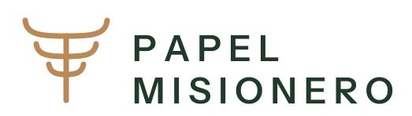
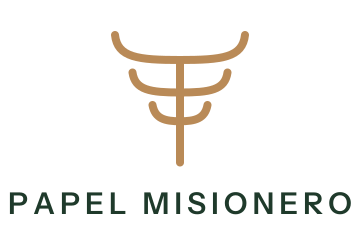
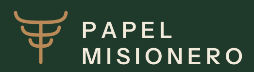
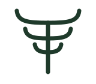
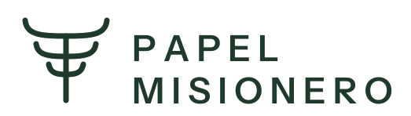
Pliego
La araucaria vive dentro de un pliego de papel kraft con la esquina doblada: el bosque y el producto en un solo signo. Funciona como ícono de app, sello o etiqueta de bobina.
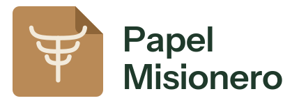
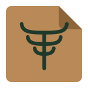
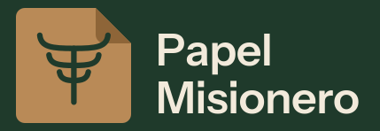
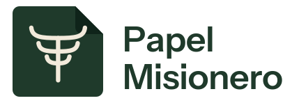
Misionero
Un logotipo con carácter editorial: la primera «i» de misionero se convierte en araucaria, su punto es la copa. La marca entera es el símbolo. En rojo tierra colorada, por el suelo de Misiones.
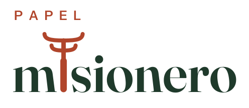
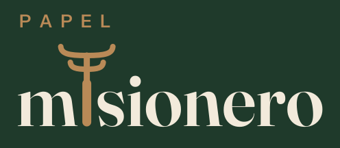
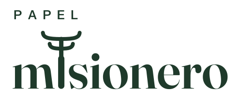